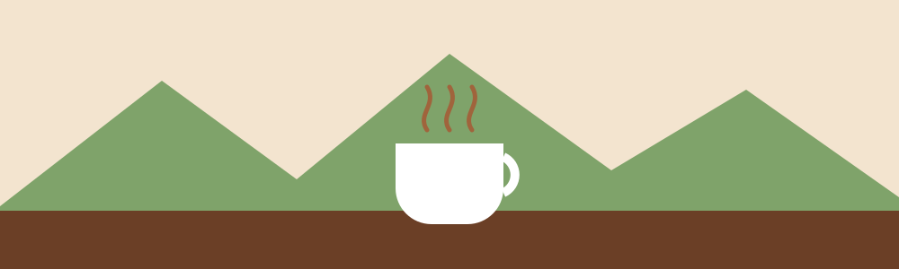

Nuestra carta
Reserva tu preparación
Máximo 2 tazas por persona al día. Entre todas las preparaciones con reserva hacemos 50 tazas al día.
Café de especialidad · Barrio Belén · Todos los días, 8:00 a. m. a 8:00 p. m.

Máximo 2 tazas por persona al día. Entre todas las preparaciones con reserva hacemos 50 tazas al día.